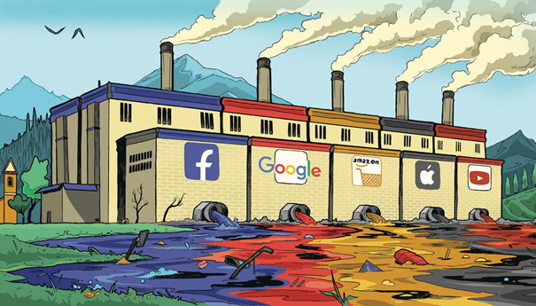
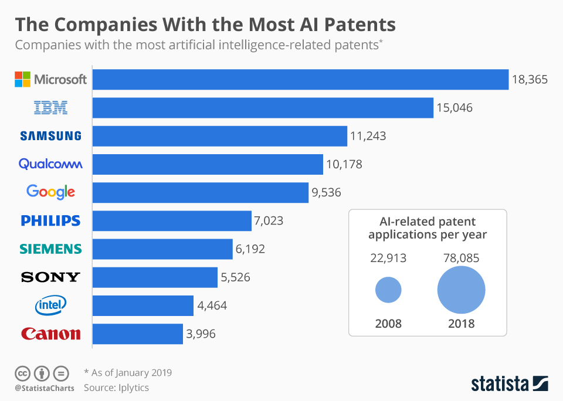
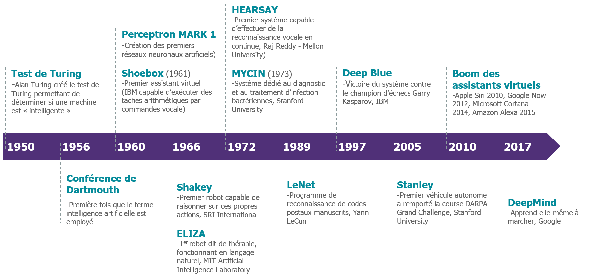

Pollution numérique
La pollution numérique est un terme dont on entend rarement parler. Pour cause, celle-ci est souvent éclipsée par des types de pollutions plus « traditionnelles » (moyens de transports, énergies fossiles, et objets non dégradables).
Le numérique comptait cependant en 2019 pour près de 10% de la consommation mondiale d’électricité. D’après certains experts, d’ici 2025 l'impact écologique du numérique sera le même que celui de la voiture.
Malgré la situation économique actuelle, Apple a enregistré des bénéfices records en 2020
Science-fiction : toujours pour demain ?
Alors que nos sociétés semblent se rapprocher de plus en plus du « tout numérique », des questions se doivent d’être posées.
Aujourd’hui nous avons, contrairement à il y a 50 ans, la possibilité d’entrevoir le futur et d’agir.
Le film « Her » de Spike Jonze présente un avenir plus proche que beaucoup de gens l'imaginent. Sept ans après sa sortie, il est incroyable de voir à quel point notre société se rapproche de plus en plus de celle représentée dans ce film.
De plus en plus, nous ne faisons qu'un avec la technologie
C’est ici que se pose une question fondamentale : voulons-nous vivre dans une telle société ?
« Her » aborde le sujet de l’intelligence artificielle. A quel point cette dernière pourrait-elle être néfaste à l’environnement ? Est-il déjà trop tard ?
Sans le savoir, nous sommes déjà entourés par l’intelligence artificielle.
Dicter des messages à son téléphone ? Boite mail qui détecte les spams ? Jeux vidéo qui s’adapte à nos comportements ?
Tout cela, c’est l’IA.
Une présence discrète, mais omniprésente
L’IA n’est pas une invention de demain. C’est une invention d’hier, qui continue de se développer aujourd’hui.
Recherches Google, ou encore ‘conseillers’ sur les sites internet d’assurances, vous faites face quotidiennement à l’intelligence artificielle sans forcément le savoir.
Ce qui rend unique Samantha, l'intelligence artificielle de « Her », est le fait qu’elle soit dotée de capacités évolutives. Pour autant, rentrons-nous ici dans le domaine de la science-fiction ? Non.
Depuis une dizaine d’année, un terme revient sans cesse dans le milieu du numérique, le « Deep Learning » (apprentissage profond).

Popularisé récemment, cette technologie existe en réalité depuis près d'un demi-siècle
Des conséquences plus importantes que les bénéfices ?
Le Deep Learning, c’est le fait qu’une intelligence artificielle va (grâce à ses expériences passées) pouvoir se modifier, apprendre de ses erreurs.
Et comme vous l'aurez deviné, le Deep Learning est déjà présent partout autour de nous.
Logiciels de traduction, voiture autonome, playlist Spotify, recommandation YouTube… tout ceci ne serait pas possible sans le Deep Learning.
Mais alors, n’est-ce pas une bonne chose ?
Malheureusement, l’intelligence artificielle pollue. Beaucoup.
Selon une étude publiée dans la revue scientifique du MIT, Technology Review, le fait d’entraîner une intelligence artificielle en Deep Learning produit autant que cinq voitures combinées durant toute leur durée de vie (vous pourrez retrouver cet article en bas de cette page).
"Les Entreprises Avec le Plus de Brevets sur l'IA", 2019, statista
appuyez pour agrandir
Le nombre d’intelligences artificielles dans le monde n’est pas limité à une ou deux. Il s’agit d’un gigantesque marché comptant des milliers de modèles différents et qui devrait valoir, en 2025, presque 200 milliards de dollars.
Bien sûr, plus la technologie est poussée, plus elle devient gourmande en énergie. Dans « Her », il est fort probable que Samantha ait un poids écologique encore plus lourd.
Imaginez un monde où votre PC pollue autant que des centaines de voitures réunies. C’est le monde qui nous attend peut-être si nous ne changeons pas les choses.
L'évolution de l'IA au cours du temps
appuyez pour agrandir
Quand devons-nous agir ?
Les plus réfractaires pourraient dire que de là à avoir l'équivalent d'une usine dans son salon, nous avons encore du temps. Mais combien de temps exactement ?
Plusieurs experts s’accordent à dire que d’ici 2050, l’intelligence artificielle arrivera au même niveau que l’intelligence humaine. Imaginez quel sera le prix écologique d’une telle technologie.
30 ans, voici le temps qu’il nous reste afin de devenir plus responsable écologiquement.